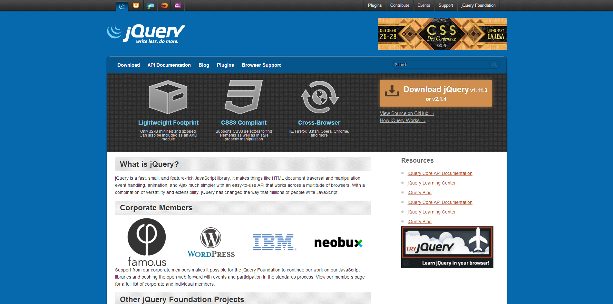
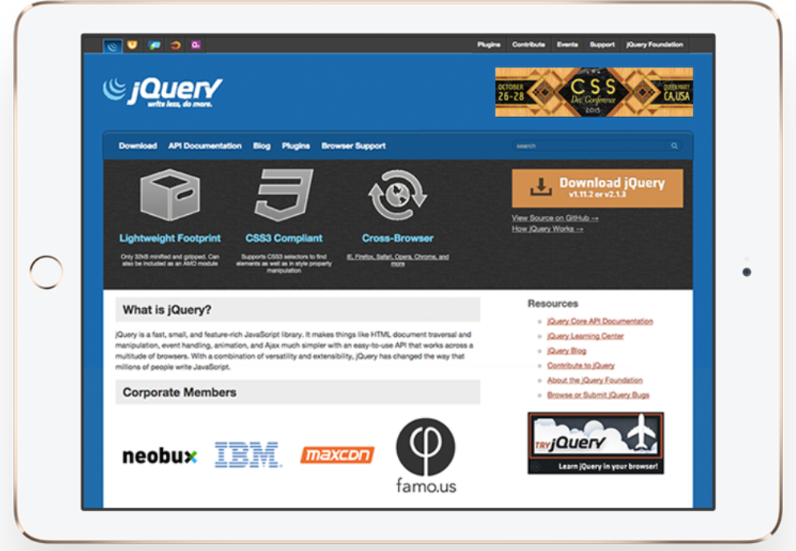
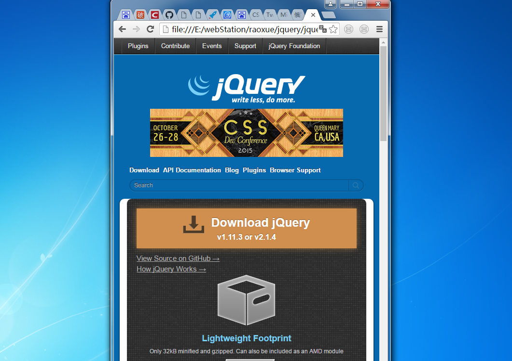

JQuery响应式
响应式布局现在是几乎哪里都有用到，BootStrap现在很流行（我的作品展示网页是用BootStrap做的），但是它对更高要求的响应式不能做到定制完美的效果，所以我研究了响应式布局并写出了仿JQuery的这个网页，主要使用到了媒体查询屏幕适配然后在不同的尺寸下展现不同的样式，然后尺寸需要自适应的单位会用百分比或者em等。



响应式布局现在是几乎哪里都有用到，BootStrap现在很流行（我的作品展示网页是用BootStrap做的），但是它对更高要求的响应式不能做到定制完美的效果，所以我研究了响应式布局并写出了仿JQuery的这个网页，主要使用到了媒体查询屏幕适配然后在不同的尺寸下展现不同的样式，然后尺寸需要自适应的单位会用百分比或者em等。